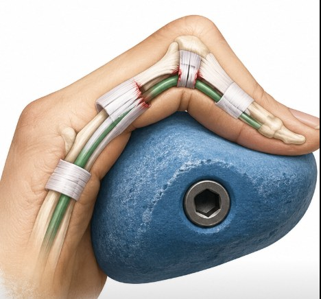

3.1 Purpose of This Module
Modules 1 and 2 established the sport context and the detailed anatomy and biomechanics of the climbing hand. This module shifts to the applied injury picture: how common climbing injuries actually are, how that picture changes with climbing discipline, grade, and training load, and how acute and overuse presentations differ mechanically — with a particular focus on the hand and fingers, before extending to the other frequently affected sites: wrist, elbow, and shoulder. This forms the direct foundation for the site-by-site assessment approach in Module 4.
3.2 How Common Are Climbing Injuries?
Injury is common in climbing populations. A UK cross-sectional survey of 201 active climbers found that around half had sustained at least one injury requiring medical attention or withdrawal from participation in the preceding 12 months, with climbing frequency and technical difficulty both associated with increased injury occurrence, particularly cumulative upper-limb trauma.
Prevalence varies by population and measurement method, which is worth bearing in mind when interpreting any single figure. A large survey of advanced and elite Swedish climbers (the CLIMB study) reported the following one-week prevalence of injury-related problems by body region:
| Body Region | One-Week Prevalence of Injury-Related Problems |
|---|---|
| Finger and hand | 49.5% |
| Shoulder | 35.2% |
| Knee | 29.1% |
| Lumbar back | 26.4% |
| Arm | 25.3% |
| Thoracic back and neck | 17.0% |
| Foot and lower leg | 12.1% |
Across multiple cohort studies using different populations and methodologies, the finger and hand consistently emerge as the single most frequently affected region, with reported prevalence figures across studies ranging from roughly 30% to over 40% of all climbing injuries. A comprehensive orthopaedic review similarly found that a substantial proportion — estimated at 42–71% — of climbing injuries localise to the wrist, elbow, and shoulder combined, with overuse mechanisms particularly prevalent across this group.
3.3 Prevalence by Discipline, Grade & Training Load
Injury patterns differ meaningfully by climbing discipline, reflecting the different demands outlined in Module 1. Bouldering, with its emphasis on maximal, often dynamic single-move efforts and unroped falls onto crash pads, is more strongly associated with acute injury — particularly acute finger and lower-limb trauma. Sport and traditional climbing, with their longer routes and sustained submaximal loading, are more strongly associated with overuse presentations, particularly at the shoulder and elbow.
Climbing grade and training volume are consistently identified as risk factors for overuse injury specifically. In a retrospective study of finger flexor tenosynovitis in sport climbers, a climbing level above French grade 7b (moderate to advanced difficulty) was an independent predictor of longer symptom duration. Similar volume-related associations are reported elsewhere in the literature for youth climbers, where higher weekly training hours are associated with increased finger growth plate injury risk (Module 2).
Much of the published prevalence literature draws on self-selected, self-reported samples across a mix of indoor, outdoor, recreational, and competitive populations. Treat specific percentages as indicative of relative pattern (e.g. "fingers are the most commonly affected site") rather than as precise, generalisable rates for any individual patient population.
3.4 Acute vs Overuse Injury: Two Distinct Patterns
Climbing injuries broadly divide into two mechanistic categories, and distinguishing between them early in the clinical history shapes the entire assessment and management pathway that follows.
| Feature | Acute Injury | Overuse Injury |
|---|---|---|
| Onset | Sudden — a single identifiable moment (a fall, a dynamic move, a foot slipping while crimped). | Gradual — symptoms build over days to months of accumulating training load. |
| Typical examples | Pulley rupture, collateral ligament sprain, ankle fracture/sprain, shoulder dislocation, SLAP lesion, rotator cuff tear. | Flexor tenosynovitis, medial epicondylalgia, growth plate stress injury, rotator cuff tendinopathy. |
| Underlying mechanism | Tissue failure at a load beyond its structural capacity in a single event. | Cumulative microtrauma outpacing the tissue's rate of adaptation and repair. |
| Assessment implication | Clear mechanism and timeline; focal findings often present on exam. | Vaguer history requires careful training-load review (Module 5) alongside the physical exam. |
A useful further distinction within "acute" injury is whether it occurred during a fall (a true traumatic mechanism, more often affecting the lower limb and shoulder) or during a controlled climbing movement where a structure suddenly failed under load — the mechanism typical of pulley rupture, where the finger itself was never out of control, but the tissue was.
3.5 Finger & Hand Injury Mechanisms in Detail
Building on the anatomy in Module 2, three finger presentations account for the large majority of finger-specific pathology seen in climbers, and distinguishing between them clinically is a core skill developed further in Module 4.
Pulley Rupture
The mechanism described in Module 2 — a crimped finger subjected to a sudden increase in eccentric load, typically when a foot unexpectedly slips or a dynamic move is caught awkwardly — remains the dominant cause of acute finger injury in climbers. Presentation and grading are covered in full in Module 4.

Chronic Overload of Pulley
In cases where there is repeated overload over time, the development of ganglion cysts in the pulley/tendon sheath is common. These can be palpated and are often associated with tenosynovitis.
Flexor Tenosynovitis
Tenosynovitis of the finger flexor tendon sheath, typically at the A2–A4 region, is among the most frequent overuse presentations in sport and competition climbers. Unlike pulley rupture, it typically develops gradually with an increase in training volume or intensity rather than a single traumatic event, and presents as diffuse volar swelling and pain rather than the focal tenderness typical of a pulley strain, although this can be misleading as a diagnostic tool as tenosynovitis is typically tender over the A2 area. True differential diagnosis needs an ultrasound.
A ten-year retrospective database of sport climbers treated conservatively found a favourable natural history: average symptom duration of around 30.5 weeks, with the large majority of climbers eventually resuming climbing and roughly three-quarters regaining or exceeding their prior climbing level without invasive treatment. Cortisone injections are sometimes used for the more persistent cases, which makes the need for accurate diagnosis with ultrasound vital.
Finger Joint Capsulitis / Synovitis
The third common finger presentation involves irritation of the PIP (or DIP less often) joint capsule itself, often associated with asymmetric finger loading or suboptimal gripping mechanics rather than a single grip type. It typically presents insidiously, may ease somewhat with warm-up and mid-range movement, and has been shown in case-study evidence to respond well to a structured, progressive rehabilitation framework of unloading, mobility, strength, and movement correction.
Pulley injury, flexor tenosynovitis, and capsulitis/synovitis can all present as "finger pain in a climber," but they differ in onset, pain location, and management pathway. Module 4 builds out the full differential assessment framework for distinguishing between them.
3.6 Other Frequent Injury Sites: Wrist, Elbow, Shoulder & Knee
Wrist
As introduced in Module 2, the TFCC and the hook of hamate are the two structures most frequently implicated in climbing-related wrist pain, both loaded disproportionately by ulnar-deviated, crimped, or sidepull/undercling hand positions. Hamate hook stress injury and fracture occur almost exclusively in climbing populations among the general athletic literature, reflecting the unique contact pressure climbing places on this structure.
Elbow
Medial epicondylalgia ("climber's elbow") is the most frequent elbow presentation, representing tendinopathy at the common flexor-pronator origin. It arises from the combination of sustained gripping (loading the forearm flexor mass) and the pronated hand position required to pull on the rock — a combination that places chronic tensile load through the medial epicondyle attachment. It is characteristically an overuse presentation rather than acute, developing with training volume and insufficient recovery, but can be brought on acutely by an intense training session that is out of the normal for the athlete, especially with extreme load, forceful and uncontrolled movement patterns. Lateral epicondylalgia occurs less frequently in climbers but remains a relevant differential, particularly with heavy lock-off and pressing movements.
Shoulder
The shoulder is among the most commonly affected regions in higher-level climbers, with rotator cuff tendinopathy/impingement and labral pathology (including SLAP-type lesions) the most frequently reported presentations. These arise from the repetitive overhead reaching, dynamic catches, and asymmetric loading positions (including the "chicken-wing" position, where the shoulder internal rotators and latissimus dorsi work under high, awkward load) that are characteristic of climbing movement.
Knee
The knee experiences climbing-specific loading through two largely separate mechanisms rather than a single injury pattern. Most climbing moves have rotational components in weight bearing through a flexed knee.
High steps and knee bars drive the knee into deep flexion under full body load; drop knees add simultaneous tibial rotation on a planted foot. Together, these place the menisci under combined compressive and shear stress — a meaningfully different mechanism to the more linear loading seen in most other sports — and repeated exposure can extend this irritation to the broader articular cartilage surfaces.
Heel hooking introduces a second, distinct demand: the hook actively engages hip extension and knee flexion against resistance, placing substantial eccentric and stabilising load through the distal hamstring tendon — particularly biceps femoris — at its insertion. Because the lower leg is frequently held in a rotated, externally-loaded position throughout the hook, this same movement can stress the proximal tibiofibular joint enough to produce subluxation-type symptoms, with the popliteus implicated on both sides of that picture: as the dynamic stabiliser working to control the rotation, and, when it's overloaded itself, as a source of posterolateral knee pain in its own right.
3.7 Posture and Antagonist Muscle Balance
Repetitive pulling-dominant loading produces a recognisable postural signature in regular climbers, sometimes termed "climber's back" in the literature. A cross-sectional study of high-ability sport climbers found significantly greater thoracic kyphosis in performance-oriented climbers than in recreational controls, with climbing ability level itself correlating with the degree of postural change — a genuinely dose-dependent adaptation rather than an occasional quirk.
This increased kyphosis is accompanied by a forward, anteriorly rotated shoulder girdle: the internal rotators and horizontal adductors recruited heavily during pulling (latissimus dorsi, pectoralis major, the anterior deltoid) shorten and dominate relative to their posterior counterparts, drawing the scapulae into protraction.
A pattern similar to the glenohumeral internal rotation deficit (GIRD) described in overhead throwing athletes is often proposed in climbers on the same biomechanical logic — repetitive, loaded internal rotation promoting posterior capsular tightness and a corresponding loss of internal rotation range — though the climbing-specific evidence for this remains thinner than the postural kyphosis findings above.
Trapezius engagement follows a related pattern: climbers frequently show upper trapezius dominance during pulling and reaching movements, with comparatively poor lower trapezius recruitment, contributing to reduced scapular upward rotation and posterior tilt during arm elevation.
Because climbing is fundamentally a pulling-dominant sport, this imbalance is not incidental but structural: almost every climbing movement loads the same internal rotators, adductors, and finger/wrist flexors, while the muscles that would normally oppose and control that pull — lower trapezius, serratus anterior, the shoulder external rotators (infraspinatus, teres minor), and wrist/elbow extensors — receive comparatively little loading on the wall itself.
Left unaddressed, this creates a self-reinforcing cycle: the postural adaptation increases the mechanical disadvantage these already-underused muscles work under, which in turn makes it harder for them to control scapular and glenohumeral position during climbing, increasing the load passed on to the passive structures discussed elsewhere in this module.
For this reason, targeted antagonist strengthening — lower trapezius and serratus anterior work for scapular control, external rotation strengthening for the rotator cuff, and wrist/elbow extensor loading to balance the flexor-dominant grip work — is not an optional add-on to a climbing training programme but a genuinely protective component of it, a point returned to in Module 5's rehabilitation and reloading content.
Summary
Climbing injury is common, concentrated disproportionately in the fingers and upper limb, and follows two broadly distinct mechanistic patterns: acute tissue failure under sudden load, and gradual overuse breakdown from cumulative training exceeding tissue tolerance. Discipline, grade, and training volume all modify this picture in clinically meaningful ways. With this epidemiological and mechanistic foundation in place, Module 4 turns to the practical work of assessing and diagnosing these injuries site by site, beginning with the fingers.
References
Injury Prevalence Overview (3.2)
Jones G, Asghar A, Llewellyn DJ. The Epidemiology of Rock-Climbing Injuries. Br J Sports Med. 2008;42(9):773–778.
Identeg F, Nigicser I, Edlund K, Forsberg N, Sansone M, Tranaeus U, Hedelin H. Mental Health Problems, Sleep Quality and Overuse Injuries in Advanced Swedish Rock-Climbers — the CLIMB Study. BMC Sports Sci Med Rehabil. 2024;16:46.
Cole KP, Uhl RL, Rosenbaum AJ. Comprehensive Review of Rock Climbing Injuries. J Am Acad Orthop Surg. 2020;28(12):e501–e509.
Schöffl V, Popp D, Küpper T, Schöffl I. Injury Trends in Rock Climbers: Evaluation of a Case Series of 911 Injuries Between 2009 and 2012. Wilderness Environ Med. 2015;26(1):62–67.
Discipline, Grade & Training Load (3.3)
Jones G, Johnson MI. A Critical Review of the Incidence and Risk Factors for Finger Injuries in Rock Climbing. Curr Sports Med Rep. 2016;15(6):400–409.
Jones G, Schöffl V, Johnson MI. Incidence, Diagnosis, and Management of Injury in Sport Climbing and Bouldering: A Critical Review. Curr Sports Med Rep. 2018;17(11):396–401.
Kabelitz M, Spörri J, Mauler F, et al. Nonoperative Treatment of Finger Flexor Tenosynovitis in Sport Climbers — A Retrospective Descriptive Study Based on a Clinical 10-Year Database. Biology (Basel). 2022;11(6):815.
Finger & Hand Injury Mechanisms (3.5)
Schöffl V, Hochholzer T, Winkelmann HP, Strecker W. Pulley Injuries in Rock Climbers. Wilderness Environ Med. 2003;14(2):94–100.
Kabelitz M, Spörri J, Mauler F, et al. Nonoperative Treatment of Finger Flexor Tenosynovitis in Sport Climbers. Biology (Basel). 2022;11(6):815.
Vagy J. Clinical Management of Finger Joint Capsulitis/Synovitis in a Rock Climber. Front Sports Act Living. 2023;5:1185653.
Wrist, Elbow & Shoulder (3.6)
Lutter C, Schweizer A, Hochholzer T, Bayer T, Schöffl V. Pulling Harder than the Hamate Tolerates: Evaluation of Hamate Injuries in Rock Climbing and Bouldering. Wilderness Environ Med. 2016;27(4):492–499.
Holtzhausen LM, Noakes TD. Elbow, Forearm, Wrist, and Hand Injuries Among Sport Rock Climbers. Clin J Sport Med. 1996;6(3):196–203.
Cole KP, Uhl RL, Rosenbaum AJ. Comprehensive Review of Rock Climbing Injuries. J Am Acad Orthop Surg. 2020;28(12):e501–e509.
Posture and Antagonist Muscle Balance
Förster R, Penka G, Bösl T, Schöffl VR. Climber's Back — Form and Mobility of the Thoracolumbar Spine Leading to Postural Adaptations in Male High Ability Rock Climbers. Int J Sports Med. 2009;30(1):53–59.
25 questions, 80% pass mark. Passing unlocks Module 4 automatically.